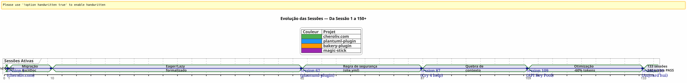
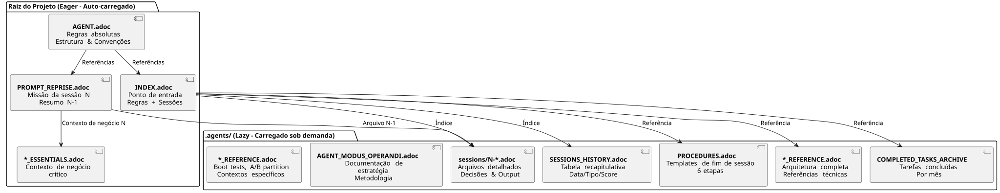
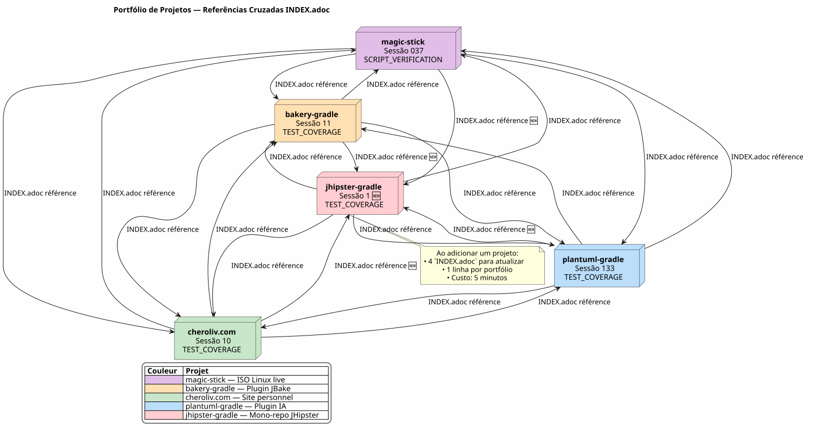
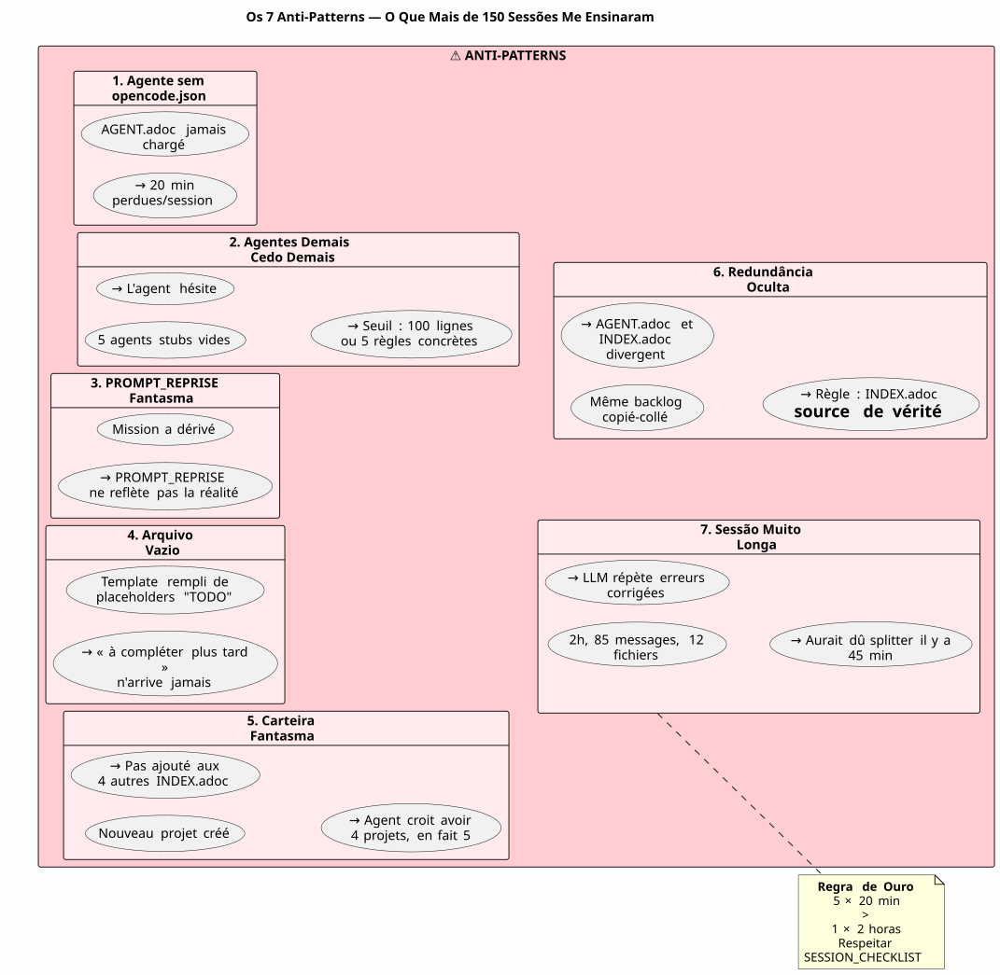

Governar um Agente de IA com AsciiDoc: Minha Estratégia Eager/Lazy para Sessões Opencode sem Vazamento de Contexto
Publicado em 24 April 2026
Resumo
Quando trabalhamos com um agente de IA como o Opencode em projetos complexos ao longo de várias sessões, enfrentamos um problema fundamental:o vazamento de contextoO agente não se lembra da sessão anterior. Tudo o que lhe foi explicado — a arquitetura, as convenções, o estado do backlog — está perdido. Reconstruir esse contexto a cada sessão é dispendioso, lento e fonte de erros.
Este artigo apresenta a estratégia artesanal que construí para resolver este problema: um sistema de governança persistente baseado em arquivos AsciiDoc, com uma dicotomiaÁvido/Preguiçosopara otimizar o consumo do token de contexto, e umaprocedimento de encerramento de sessão obrigatóriopara assegurar a continuidade.
A Cena: Segunda-feira, 21 de abril, 9h00
Abro novamente o Opencode para retomar o meu plugin Gradle`plantuml-plugin`Ontem à noite, passei três horas discutindo com o agente a arquitetura do pool de chaves API — rotation round-robin, gestion des quotas, fallback automatique. Esta manhã, o agente olha para mim com olhos de peixe dourado.
Please provide the text you would like me to translate. Olá, eu sou o seu assistente Opencode. Como posso ajudar você hoje? Please provide the text you would like me to translate.
Não há — Ah sim, o pool de chaves API, estávamos na estrutura YAML. Não há — Atenção,`PlantumlManager`é um objeto Kotlin singleton, não uma classe. Não — Não, decidimos ontem que`SyntaxValidationResult`restava uma sealed class aninhada em`PlantumlService`Please provide the text you would like me to translate.
Tudo tem que ser refeito. Ou melhor: tudo tem que ser reexplicado. Vou passar os primeiros vinte minutos da minha sessão reconstruindo um contexto que o agente já teve em mãos ontem. Vinte minutos de tokens queimados. Vinte minutos em que eu poderia estar programando, mas estou fazendo um ensino obrigatório.
Não é um bug do Opencode. É a própria natureza dos LLMs conversacionais: entre duas sessões, a memória de trabalho écompletamente apagada. O agente não se lembra da missão anterior, das decisões tomadas, das armadilhas identificadas, do código que escrevemos juntos.
Eu vivi isso dezenas de vezes. Em quatro projetos simultâneos. Com sessões que se sucedem durante semanas. Eu calculei: em média,30 a 40% do tempo de sessãofoi dedicado a recontextualizar o agente. Na sessão 87 do projeto`plantuml-plugin`, eu perdi a paciência. Não podia mais me dar ao luxo de explicar pela décima vez que`AttemptEntry`é uma data class de nível superior em`DiagramProcessor.kt`Please provide the text you would like me to translate.
Eu precisava de um sistema. Não de um hack. Uma governança de verdade.
Gênesis: Do Caos ao Método
As Primeiras Sessões: A Era das Trevas
Meu primeiro projeto com Opencode,plantuml-plugin, começou sem qualquer governança. Eu faço uma pergunta, o agente responde, nós iteramos, a sessão termina e, no dia seguinte, recomeçamos do zero. Foi a sessão 1, depois a 2, depois a 3… até a sessão 62, onde percebo que perdi horas acumuladas reexplicando a mesma arquitetura.
Na sessão 62, os números estão aqui:198 testes unitários passam, 42 testes funcionais validados, o plugin funciona. Mas o custo cognitivo é insuportável. Cada nova sessão começa com um monólogo de vinte minutos sobre a estrutura do projeto.
O Episódio do site.yml Destruído (Sessão 2, bakery-plugin)
O método nasce também de uma catástrofe. No projeto`bakery-gradle`, na sessão 2, peço ao agente para modificar o arquivo`site.yml`. O agente, sem verificar se o arquivo é versionado, faz um`Write`completo que sobrescreve o conteúdo. Resultado: os tokens reais (chaves de API do Firebase, segredos de implantação) são substituídos por placeholders fictícios. O arquivo não estava no git — ele estava no`.gitignore`para proteger os segredos.
Sem salvamento. Sem`git restore`possível. Estou travado. Preciso reconstruir manualmente o arquivo de configuração, recuperar os tokens nos meus gerenciadores de senhas, colar tudo de novo.
É dessa frustração que nasce aRegra Absoluta 1bПожалуйста, предоставьте текст для перевода.
Please provide the text you would like me to translate. NUNCA sobrescreverum arquivo config com um`Write`completo quando um`Edit`parcial é suficiente.NUNCA substituirvalores sensíveis por valores fictícios.Verificar git check-ignore e `git ls-filesantes de qualquer modificação. Please provide the text you would like me to translate.
Esta regra, hoje gravada no mármore de todos os meus arquivos`AGENT.adoc` et `INDEX.adoc`em quatro projetos, nasceu de um erro real que me custou uma hora de trabalho manual.
A Migração Markdown → AsciiDoc (Sessão 1, cheroliv.com)
Em 25 de abril de 2026, em`cheroliv.com`, tomo uma decisão radical: converter a totalidade da governança de Markdown para AsciiDoc. Não é estética. É funcional. AsciiDoc oferece uma estrutura semântica que os LLMs leem melhor: seções hierárquicas, tabelas tipadas, admoestações (NOTE, WARNING, CAUTION), atributos de documento legíveis por máquina.
A sessão 1 de`cheroliv.com`formaliza a estrutura:
-
Conversão de`AGENTS.md` en
AGENT.adoc -
Criação dos agentes especializados:`CODER.adoc`,
SCRUM_MASTER.adoc,PLANTUML_DESIGNER.adoc -
Criação da estrutura Eager/Lazy:`INDEX.adoc`,
SESSIONS_HISTORY.adoc,AGENT_SESSION_MANAGER.adoc,SESSION_CHECKLIST.adoc,PROCEDURES.adoc
Apenas um commit:`90975e9 refactor: migrate agent governance from Markdown to AsciiDoc`. E o site continua a funcionar.

A timeline acima ilustra a progressão real. O ponto de viragem é a sessão 87: é aqui que a frustração da recontextualização repetida ultrapassa o limiar de tolerância, e que o método Eager/Lazy deixa de ser uma ideia para se tornar uma obrigação.
A Estratégia: Eager/Lazy em Profundidade
Filosofia: Cache Informático Aplicado à Cognição
Minha abordagem inspira-se diretamente na gestão de cache informática. Tudo o que écrítica e frequentemente utilizadodeve estar imediatamente acessível (Ansioso). Tudo o que écontextual ou volumosodeve ser carregado sob demanda (Preguiçoso).
Eager (Painel de Controle) |
Lazy (Manual do Proprietário) |
Tamanho |
< 100 linhas, < 10k tokens |
Ilimitado, detalhado |
Carregando |
Auto, no início da sessão |
A pedido do agente |
Conteúdo |
Regras absolutas, missão corrente, estado crítico |
Arquivos de sessões, histórico completo, procedimentos detalhados, referências técnicas |
Papel |
Orientar imediatamente o agente |
Responder a perguntas de contexto profundo |
Os Arquivos Eager: O Painel de Controle
Estes ficheiros residem na raiz de cada projeto e são carregados automaticamente pelo agente no início de cada sessão. Eles formam opainel de controle-- informação crítica, imediatamente acessível.

AGENT.adoc-- O arquivo mestre. Em`cheroliv.com`, ele tem 200 linhas e contém:
-
As regras absolutas do projeto (nada de commit sem permissão, nada de`rm`sem confirmação)
-
A estrutura do projeto e as convenções de código
-
Os comandos essenciais (
./gradlew serve,./gradlew test) -
As épicas e o backlog do produto (user stories priorizadas)
-
Os critérios de qualidade transversais (acessibilidade, responsive, compatibilidade)
Sobre`bakery-plugin`, a Regra 0 é diferente:./gradlew -q publishToMavenLocal` obrigatório após cada modificação do código fonte. Porque testar o plugin sem republicar o JAR local me fez perder uma hora depurando um código que ainda não tinha sido empacotado.
PROMPT_REPRISE.adoc-- A missão da sessão atual. Atualizado ao final de cada sessão, contém:
-
O número da sessão e a missão prioritária
-
O resumo da sessão anterior (o que foi feito, o que resta fazer)
-
Os critérios de aceitação da sessão atual
-
Os lembretes técnicos específicos
.agents/INDEX.adoc-- O ponto de entrada. Ele resume as regras absolutas, as sessões recentes e, sobretudo, oportfólio de projetosgeridos com a mesma metodologia. Até à data, cinco projetos constam nela:
----
| magic-stick | Session 23 | SCRIPT_VERIFICATION.adoc | 2026-04-27 |
| bakery-gradle | Session 11 | TEST_COVERAGE_ANALYSIS | 2026-04-27 |
| cheroliv.com | Session 9 | TEST_COVERAGE_ANALYSIS | 2026-04-27 |
| plantuml-gradle| Session 133| TEST_COVERAGE_ANALYSIS | 2026-04-23 |
| jhipster-gradle-plugins | Session 1 | TEST_COVERAGE_ANALYSIS | 2026-04-28 |
----
**`*_ESSENTIALS.adoc`** -- Uma adição recente (Sessão 109, plantuml-plugin) para otimizar ainda mais o contexto Eager. Em vez de carregar 200 linhas de contexto de negócio no pool de chaves API, carrego 50 linhas do essencial, e as outras 150 linhas permanecem em LAZY em`*_REFERENCE.adoc`Please provide the text you would like me to translate.
Resultado medido: passagem de**~25k tokens EAGER para ~10k tokens**(ganho de 60%). O agente não precisa mais de lembretes que consomem muita energia.
==== O Elo Perdido: `opencode.json
Devo confessar-lhe uma coisa que quase esqueci de documentar. Acima de todos esses arquivos .adoc, há um minúsculo arquivo JSON sem o qual nada funciona. Ele se chama`opencode.json`e tem seis linhas. Literalmente seis linhas.
[source,json]
----
{
"$schema": "https://opencode.ai/config.json",
"instructions": [
"AGENT.adoc"
]
}
----
É este arquivo que diz ao Opencode: « Na inicialização, carregue`AGENT.adoc`automaticamente. » Sem ele, o agente é uma página em branco exatamente como eu descrevia no início do artigo. Com ele, o agente já tem em mãos as regras absolutas, a arquitetura do projeto e os comandos essenciais — antes mesmo de eu dizer olá.
Descobri a importância deste arquivo por acaso. Em`bakery-plugin`, ele não existia. Eu me perguntava por que o agente estava sistematicamente mais "perdido" neste projeto do que nos outros. As regras absolutas estavam sim em`AGENT.adoc`— mas`AGENT.adoc`nunca era carregado. O agente lia apenas o que eu lhe dizia para ler, manualmente, a cada sessão. Era a sessão 11 de`bakery-plugin`quando percebi a ausência do`opencode.json`. Eu o criei — e a sessão 12 começou como as outras.
Este arquivo é tão óbvio para mim agora que eu nem sequer pensava mais nele. Um erro clássico do desenvolvedor que conhece demais a sua ferramenta. Hoje, eu o crio sistematicamente *antes*`AGENT.adoc`. É a primeira pedra.
==== A Dualidade de `INDEX.adoc
Outra sutileza que merece ser explicitada:`INDEX.adoc`vive em`.agents/`— uma pasta que apresentei como `LAZY`. No entanto, eu a listo como `EAGER` em todas as minhas tabelas. Há uma tensão aparente aqui.
A realidade do terreno: os arquivos`.agents/INDEX.adoc`são carregados automaticamente no início da sessão, tal como`AGENT.adoc` et `PROMPT_REPRISE.adoc`. Eles estão em`.agents/`por razões de organização — para não invadir a raiz — mas o seu comportamento é EAGER.
Sobre`plantuml-plugin`, `INDEX.adoc`tem 200 linhas e contém as regras absolutas *completas* com seu histórico (as lições de sessões passadas), os EPICs com pontuações e o portfólio de projetos. É o documento que o agente consulta para saber « onde estamos». Sobre`bakery-plugin`, ele faz 150 linhas com o roadmap e as sessões recentes.
A redundância voluntária entre`AGENT.adoc` et `INDEX.adoc`pode surpreender. As regras absolutas estão presentes em ambos. Porquê? Porque cumprem dois papéis diferentes: em`AGENT.adoc`, elas são *explicativas* (o storytelling da regra, a lição aprendida); em`INDEX.adoc`, elas são *executivas* (a regra nua, sem justificativa, para uma consulta rápida). O agente lê`AGENT.adoc`uma vez para *compreender*; ele relê`INDEX.adoc`a cada sessão para *aplicar*. Dois usos, dois formatos.
[plantuml, format=svg, id=diag-dualite-agent-index, alt="Comparaison entre AGENT.adoc (narratif) et INDEX.adoc (exécutif)"]
----
@startuml
skinparam backgroundColor #FEFEFE
skinparam defaultTextAlignment center
title Dualidade AGENT.adoc ←→ INDEX.adoc
left to right direction
rectangle "AGENT.adoc\n(Raiz — EAGER)" as AGENT #E3F2FD {
rectangle "📖 **Formato Narrativo**\nO storytelling da regra\na lição aprendida, o contexto" as NARR
rectangle "🏗️ **Arquitetura Completa**\nEstrutura do projeto, componentes\nBacklog detalhado US" as ARCHI
rectangle "📋 **Regras Explicativas**\nPor que a regra existe\nHistórico do incidente" as EXPL
}
rectangle "INDEX.adoc\n(.agents/ — EAGER)" as INDEX #E8F5E9 {
rectangle "⚡ **Formato Executivo**\nA regra nua, sem justificativa\nConsulta rápida" as EXEC
rectangle "📊 **Roadmap & EPICs**\nQuadro resumido\nProgressão, Pontuação, Prioridade" as ROAD
rectangle "🌐 **Portfólio de Projetos**\nVisão transversal\n5 projetos sincronizados" as PORT
}
AGENT --> INDEX : "Agente lê AGENT.adoc\n1 vez para **compreender**"
INDEX --> AGENT : "Agente relê INDEX.adoc\na cada sessão para **aplicar**"
note bottom of AGENT
Tamanho máx.: 200 linhas
end note
note bottom of INDEX
Tamanho máx.: 200 linhas
Source de vérité en cas de divergence
end note
@enduml
----
Esta redundância assumida é uma escolha de design. Ela consome ~50 linhas adicionais de tokens EAGER — mas garante que o agente tenha sempre as regras diante dos olhos, inclusive no formato conciso que facilita a obediência imediata.
=== Os Arquivos LAZY: O Manual do Proprietário
Esses arquivos ficam em`.agents/`e são lidos apenas quando o agente precisa deles. Eles constituem a verdadeira riqueza do método, pois acumulam o conhecimento do projeto sem poluir o contexto atual.
[plantuml, format=svg, id=diag-agents-tree, alt="Arborescence complète du dossier .agents/"]
----
@startuml
skinparam folderBackgroundColor #E3F2FD
skinparam folderBorderColor #1565C0
skinparam fileBackgroundColor #FFF3E0
skinparam fileBorderColor #EF6C00
folder ".agents/" as ROOT {
file "INDEX.adoc\n(EAGER -- 200 linhas)" as IDX #E8F5E9
file "AGENT_SESSION_MANAGER.adoc\n(Template de sessão)" as ASM
file "SESSION_CHECKLIST.adoc\n(Quando alterar)" as CHK
file "PROCEDURES.adoc\n(6 etapas + LAZY/EAGER)" as PRO
file "SESSIONS_HISTORY.adoc\n(Todas as sessões)" as HIS
folder "sessions/" as SESS {
file "1-chore-migration.adoc" as S1
file "109-formalisation-lazy.adoc" as S109 #FFECB3
file "133-epic11-article.adoc" as S133
file "... +130 outros" as SMORE
}
folder "archives/" as ARCH {
file "COMPLETED_TASKS_2026-04.adoc" as CTA
file "SESSIONS_HISTORY_83-95.adoc" as SHIST
folder "sessions_summaries/" as SUM {
file "SESSION_64_SUMMARY.adoc" as SU64
file "SESSION_73_SUMMARY.adoc" as SU73
file "..." as SUMORE
}
folder "prompts_archive/" as PARCH {
file "PROMPT_REPRISE_S65.adoc" as PR65
file "PROMPT_REPRISE_S75.adoc" as PR75
file "..." as PMORE
}
}
}
IDX --> SESS : "Índice"
IDX --> HIS : "Índice"
IDX --> ARCH : "Referência"
note right of S109
Sessão 109 =
Formalização da estratégia
LAZY/EAGER
Token: ~25k → ~10k
end note
@enduml
----
A árvore acima mostra a estrutura real da pasta`.agents/`sobre`plantuml-plugin`, o projeto mais maduro. Note a profundidade em três camadas: arquivos raiz (metadados), pasta`sessions/`(arquivos cronológicos), e pasta`archives/`(agregações e resumos). É essa profundidade que transforma a governança de um simples arquivo TODO em uma**memória organizacional completa**As you didn't provide any text to translate, please provide the French fragment you would like me to translate into Portuguese.
**.agents/sessions/{N}-{titre}.adoc**-- Os arquivos detalhados de cada sessão. Atualmente:
* `plantuml-plugin`Para configurar o `env`, execute o seguinte comando :**133 sessões arquivadas**(da sessão 1 a 133)
* `bakery-plugin`Por favor, forneça o texto em francês que você deseja que eu traduza.**11 sessões**
* `magic-stick`Please provide the text you would like me to translate.**23 sessões**
* `cheroliv.com`Por favor, forneça o texto em francês que deseja traduzir.**9 sessões formais**+ 7 sessões pré-sistema reconstituídas retroativamente
Cada arquivo contém o contexto completo da sessão, as decisões tomadas, os problemas encontrados e a sua resolução, os comandos executados e o seu output.
**.agents/SESSIONS_HISTORY.adoc**-- Uma tabela resumida de todas as sessões com uma pontuação. Exemplo em`cheroliv.com`Please provide the text you would like me to translate.| -6 | 2025-05 | chore | Initialisation projet Gradle/JBake | 7/10 | 1 | 2026-04-25 | chore | Migration gouvernance agent | 8/10 | 7 | 2026-04-27 | debug/fix | Correction publishSite | 9/10 | 8 | 2026-04-27 | analyse | Analyse article 0108 | 7/10
.agents/COMPLETED_TASKS_ARCHIVE_{mois}.adoc-- As tarefas concluídas arquivadas por mês, para não sobrecarregar o backlog ativo. Quando uma user story é concluída, ela migra para cá. O backlog permanece legível: máximo de 10 itens ativos.
.agents/PROCEDURES.adoc-- Templates detalhados do procedimento de encerramento de sessão. Longo, mas lido apenas uma vez pelo agente quando aprende o método. Depois, o procedimento torna-se mecânico.
.agents/AGENT_MODUS_OPERANDI.adoc-- A documentação estratégica completa. Sobre`plantuml-plugin`, este arquivo faz900+ linhase chama-se, na realidade,AGENT_METHODOLOGIES.adoc— alterei o nome entre a escrita deste artigo e a implementação efetiva. Esse tipo de divergência de naming é inevitável em um sistema artesanal que evolui. O importante é a convenção de nomeação: se o arquivo documenta o método, ele começa com`AGENT_`ou um prefixo explícito. Ele documenta a metodologia Eager/Lazy, os patterns a seguir, os anti-patterns a evitar. Ele é LAZY porque um agente não precisa reler toda a estratégia a cada sessão, apenas quando houver ambiguidade.
*_REFERENCE.adoc — As referências técnicas específicas do projeto. Sobre`magic-stick`, dois arquivos LAZY densos:
-
AB_PARTITION_REFERENCE.adoc(147 linhas) — Arquitetura de partição A/B GPT, scripts`update-system.sh`, tamanhos estimados, mecanismo de rollback -
BOOT_TEST_REFERENCE.adoc(144 linhas) — Procedimento QEMU + VNC para testar o boot da ISO sem hardware físico, checklist BIOS/UEFI, limitações CI/CD
Sobre`plantuml-plugin`Please provide the text you would like me to translate.
-
ARCHITECTURE.adoc(134 linhas) — Estrutura das 11 data classes, pontos de atenção (armadilhas a evitar), comandos de teste otimizados -
API_KEY_POOL_REFERENCE.adoc-- Detalhes completos do pool de chaves (LAZY enquanto`ESSENTIALS`é EAGER)
Os Agentes Especializados: Uma Equipa Virtual
A governança não se limita a arquivos passivos. Eu formalizeipapéis de agentes especializadosem arquivos LAZY dedicados, que definem o workflow esperado de acordo com o tipo de tarefa.
Agente |
Arquivo |
Papel |
Projeto |
CODER |
|
Implementação FTL/CSS/JS, tags semânticas, critérios de acessibilidade |
cheroliv.com |
SCRUM Master |
|
Planejamento de US, divisão em subtarefas, detecção de dependências |
cheroliv.com |
PlantUML Designer |
|
Criação de diagramas, sintaxe PUML, integração JBake |
cheroliv.com |
O arquivo`CODER.adoc`sobre`cheroliv.com`contém regras concretas: Um único`<h1>`por página, Prefixar os caminhos com`${content.rootpath}`, Declarar o idioma`<html lang="${content.lang!"fr"}">`. Essas convenções, escritas uma vez, são respeitadas automaticamente pelo agente desde a sessão 1.
O arquivo`SCRUM_MASTER.adoc`impõe uma estrutura de entrega:Objetivo, Tarefas(ordenadas com atribuição),Critérios de aceitação, Riscos. Quando peço um plano de ação, o agente produz esta estrutura sem que eu a tenha solicitado. A governançaprogramao agente.
Quando os Agentes Especializados se Tornam Indispensáveis
A criação de agentes especializados segue uma curva natural. No início de um projeto, você não precisa deles —`AGENT.adoc`é mais suficiente. Mas quando o projeto cresce (digamos, além de 20 sessões), dois sinais devem alertá-lo:
-
O agente mistura as convenções de dois domínios distintos (ex: sintaxe
PlantUMLe regrasCSS) -
Você passa mais tempo corrigindo o agente sobre convenções que já explicou 5 vezes
Sobre`cheroliv.com`, aconteceu na sessão… 1. Sim, desde o início. Porque este projeto é um site web com três linguagens (FTL, CSS, JS), conteúdo AsciiDoc e diagramas PlantUML — três domínios que não têm nada a ver. O agente CODER precisa de conhecer os tamanhos de fonte e as media queries; o agente PLANTUML_DESIGNER precisa de conhecer a sintaxe`@startuml`Sem separação, o agente CODER me sugeria diagramas, e vice-versa. O caos.
Sobre`jhipster-gradle-plugins`, criei dois agentes especializados adaptados ao desenvolvimento de plugins Gradle:`PLUGIN_DEVELOPER.adoc` et BACKLOG_MANAGER.adoc. O primeiro codifica todas as convenções Kotlin/Gradle (não há`!!, data classes para os modelos,@TaskAction`para as tarefas). O segundo sabe que`persistence`deve estar estável antes que`assistant`não inicia o seu desenvolvimento — uma dependência crítica num mono-repo.
O erro a não cometer: criar agentes demais cedo demais.plantuml-plugin`aguardou a sessão 108 antes de formalizar um agente especializado para o pool de chaves API. Antes disso, o contexto de negócio cabia em`AGENT.adoc. A regra prática: um agente especializado justifica-se quando o seu domínio de negócio ultrapassa 100 linhas de documentação.
A Convenção de Nomenclatura das Sessões
Um detalhe que parece fútil, mas que se torna crítico quando se atinge 100 sessões. Como nomear os arquivos de arquivo?
Aprendi da pior maneira que uma convenção é necessária — quatro projetos, quatro formatos diferentes no início, e eu já não me encontrava. Hoje, a convenção que estabilizei é:
----
{N}-{type}-{sujet-kebab-case}.adoc
----
Exemplos concretos:
* `1-chore-migration-gouvernance-agent.adoc`— sessão 1, tipo chore
* `10-solidification-tests.adoc`— sessão 10, sem tipo explícito (o assunto é suficiente)
* `036-debug-graphify-symlink-epic9.adoc`— sessão 36 com número de 3 dígitos para a triagem
O número da sessão é o critério de ordenação principal. Os projetos que utilizam números com 3 dígitos (001, 036, 133) evitam problemas de ordenação lexicográfica quando se ultrapassa 99. É isso que utilizo agora em`magic-stick`Please provide the text you would like me to translate.`001-init-projet.adoc`, `036-debug-graphify-symlink-epic9.adoc`Please provide the text you would like me to translate.
O tipo é opcional e derivado das palavras-chave da sessão (debug, feature, refactor, docs, chore, test). O assunto em kebab-case é a parte mais importante: ele deve permitir encontrar uma sessão sem abrir o arquivo. Se você se perguntar "qual era a sessão em que corrigimos o timeout dos testes de integração?", a resposta é`124-fix-timeout-integration-test.adoc`Please provide the French text you would like me to translate into Portuguese.
Para as sessões históricas reconstituídas (projetos nascidos antes da governança), utilizo números negativos. Sobre`cheroliv.com`, as sessões -6 a 0 cobrem toda a história pré-governança do projeto. E para as sessões "não documentadas" ou perdidas, eu crio uma entrada em`SESSIONS_HISTORY.adoc`sem arquivo correspondente, com uma pontuação`?`. É mais honesto do que fingir.
[plantuml, format=svg, id=diag-naming-convention, alt="Arbre de décision pour le nommage des fichiers de session"]
----
@startuml
skinparam backgroundColor #FEFEFE
skinparam defaultTextAlignment center
skinparam wrapWidth 200
title Convenção de Nomeação de Sessões
start
:Une session se termine;
note right: Trigger "fim de sessão"
if (Session antérieure\nà la gouvernance ?) then (oui)
:Numéro **NÉGATIF**\n-6, -5 ... 0;
note right: Histórico\nreconstituído
:Suffixe : reconstitution;
else (non)
:Numéro **POSITIF**\nsur 3 chiffres si > 99;
note right: 001, 036, 133\npara a ordenação lexicográfica
:Détecter le **TYPE**;
if (Mots-clés trouvés ?) then (oui)
:debug / feature / refactor\ndocs / chore / test;
else (non)
:Omettre le type\n(le sujet suffit);
endif
:Formuler le **SUJET** en kebab-case;
note right
fix-timeout-integration-test
Deve permitir encontrar
sem abrir o arquivo
end note
endif
:Nom final : {N}-{type}-{sujet}.adoc;
note right
• 1-chore-migration-gouvernance.adoc
• 036-debug-graphify-symlink.adoc
• 124-fix-timeout-integration-test.adoc
• 133-epic11-article-blog-kg.adoc
end note
if (Session documentée ?) then (oui)
:Créer archive dans sessions/;
:Ajouter ligne SESSIONS_HISTORY\navec score X/10;
else (non)
:Ajouter ligne SESSIONS_HISTORY\navec score **?**\n**sans archive**;
note right: A honestidade\nem vez do vazio
endif
stop
@enduml
----
==== TEST_COVERAGE_ANALYSIS.adoc` — A Etapa 5 Detalhada
A etapa 5 do procedimento de encerramento de sessão é a mais misteriosa. Ela diz « Atualizar`TEST_COVERAGE_ANALYSIS.adoc`se foram adicionados ou modificados testes. » Mas como é este arquivo?
Sobre`plantuml-plugin`, ele evoluiu de algumas linhas para uma estrutura completa. Aqui está a sua forma estabilizada:
[source]
----
= Analyse de Couverture de Tests
== Suivi des Tests
|===
| Classe de test | Type | Tests | Statut | Dernière MAJ
| PlantumlServiceTest | unit | 45/45 | ✅ PASS | 2026-04-23
| ApiKeyPoolTest | integration | 15/15 | ✅ PASS | 2026-04-20
|===
== Historique par Session
| Session | Tests ajoutés | Tests modifiés | Couverture
| 133 | 0 | 2 | 100%
| 132 | 5 | 0 | 100%
|===
----
O interesse não é o arquivo em si — é a obrigação de *anotar* o que mudou. Sem essa etapa, após 50 sessões, você não sabe mais quais testes cobrem o quê. O agente também não. O arquivo torna-se o repositório único de verdade sobre a cobertura de testes do projeto.
Para projetos sem testes tradicionais (como`magic-stick`que testa scripts bash), a etapa 5 é substituída por`SCRIPT_VERIFICATION.adoc`. O mecanismo é o mesmo: um arquivo que acompanha o estado de validação dos scripts. Adapte a etapa 5 ao seu projeto, mas nunca a pule. Ela é a rede de segurança que impede a regressão silenciosa.
Se o seu projeto não tiver *nenhum* teste — nem unitário, nem funcional, nem script — crie mesmo assim o arquivo vazio com uma seção "A fazer: definir uma estratégia de teste." É um marcador que lembrará o seu eu futuro que este assunto não foi tratado.
[plantuml, format=svg, id=diag-session-flow, alt="Flux d'une session type avec Eager/Lazy et agents"]
----
@startuml
skinparam backgroundColor #FEFEFE
start
:Début session;
note right: O agente é uma página em branco
:Chargement EAGER auto;
note right
* AGENT.adoc (regras absolutas)
* PROMPT_REPRISE.adoc (missão N)
* INDEX.adoc (estado do projeto)
end note
if (Mission claire ?) then (oui)
:Exécution directe;
else (non)
:Charge LAZY sur demande;
note right
* SESSIONS_HISTORY.adoc (contexto passado)
* sessions/{N-1}-*.adoc (decisões)
* *_REFERENCE.adoc (arquitetura)
end note
endif
:Délégation agent spécialisé ?;
if (CODER ?) then (oui)
:Lit CODER.adoc;
:Suit conventions FTL/CSS;
elseif (SCRUM Master ?) then (oui)
:Lit SCRUM_MASTER.adoc;
:Structure livrable imposée;
elseif (PlantUML ?) then (oui)
:Lit PLANTUML_DESIGNER.adoc;
:Syntaxe PUML + intégration;
else (non)
endif
:Travail de la session;
:Fin de session (trigger utilisateur);
:Procédure 6 étapes;
note right
1. Arquivar sessões/N-*.adoc
2. Atualizar PROMPT_REPRISE.adoc (N+1)
3. Atualizar SESSIONS_HISTORY.adoc
4. Atualizar INDEX.adoc
5. Atualizar TEST_COVERAGE (se aplicável)
6. Atualizar COMPLETED_TASKS_ARCHIVE.adoc
end note
:Checklist [✅] x 6;
stop
@enduml
----
O diagrama acima mostra o ciclo de vida completo de uma sessão. O ponto chave é a bifurcação após o carregamento EAGER: ou a missão é clara o suficiente para ser executada diretamente (80% dos casos), ou o agente carrega LAZY para resolver uma ambiguidade (20% dos casos). É essa discriminação que economiza tokens.
== O Procedimento de Fim de Sessão: A Regra de Ouro
=== Por que ela é indispensável
Sem este procedimento, a estratégia Eager/Lazy não serve para nada. É ele que transforma o trabalho da sessão em informação persistente. Ele é executado**a pedido explícito do utilizador**(palavras-chave: "fim de sessão", "estou saindo", etc.), e ela é**obrigatório**-- nenhuma exceção, nenhuma omissão.
O arquivo`SESSION_CHECKLIST.adoc`define métricas de sessão ideal:
* Duração: 15-30 minutos
* Arquivos modificados: 1-3 no máximo
* Interações de LLM: 5-10 mensagens
* Contexto de tokens: < 50k
E sinais de que é preciso mudar de sessão: _O LLM repete erros já corrigidos_, _Mais de 3 arquivos modificados em paralelo_, _Conversa > 50 mensagens_. A regra de ouro:**É melhor 5 sessões de 20 minutos do que uma sessão de 2 horas com debugging chaos.**
=== O Flux de 6 Etapas (Silenciosamente)
[plantuml, format=svg, id=diag-end-session-flow, alt="Flux de la procédure de fin de session"]
----
@startuml
skinparam defaultTextAlignment center
skinparam wrapWidth 200
skinparam activityBackgroundColor #E3F2FD
start
:L'utilisateur dit "fim de sessão";
note right: Palavras-chave de gatilho
:Agent détecte le trigger;
:Étape 1\nCréer archive\n`.agents/sessions/N-*.adoc`;
note right: Todo o contexto da sessão
:Étape 2\nMettre à jour\n`PROMPT_REPRISE.adoc`;
note right: Missão N + critérios de aceitação N+1
:Étape 3\nMettre à jour\n`SESSIONS_HISTORY.adoc`;
note right: Linha de resumo: # / Data / Tipo / Assunto / Pontuação
:Étape 4\nMettre à jour\n`INDEX.adoc`;
note right: Estado atual, roadmap, arquivos modificados
:Étape 5\nMettre à jour\n`TEST_COVERAGE_ANALYSIS.adoc`;
note right: Se testes forem adicionados ou modificados
:Étape 6\nMettre à jour\n`COMPLETED_TASKS_ARCHIVE.adoc`;
note right: Arquivar tarefas concluídas
:Afficher la checklist de confirmation;
note right: Verificar se cada [✅] é merecido
stop
@enduml
----
=== Os Resultados de 150+ Sessões
Aqui está o resultado deste procedimento aplicado sistematicamente aos meus quatro projetos:
**plantuml-plugin**Please provide the text you would like me to translate.
* **133 sessões**desde o início do projeto
* **240/240 testes PASSARAM**(100% de cobertura) -- EPICs 1-7 concluídas
* **57 cenários Cucumber BDD**validados
* Regra de segurança nos arquivos de configuração originada de um erro real (Session 2 bakery-plugin)
**bakery-plugin**Please provide the text you would like me to translate.
* **11 sessões**em duas semanas
* Migração Supabase → Firebase concluída (9 testes corrigidos)
* EPIC 6 (`publishProfile`) funcional em produção
* Regra 0 criada:`publishToMavenLocal`obrigatório após cada modif
**bastão-mágico**Please provide the text you would like me to translate.
* **23 sessões**para construir um sistema live Xubuntu com partição A/B
* Primeira ISO gerada na sessão 10
* Testes de boot QEMU + VNC formalizados (documentação LAZY de 144 linhas)
* CI/CD SourceForge funcional
**cheroliv.com**Please provide the text you would like me to translate.
* **9 sessões formais**+ reconstituição de 7 sessões pré-sistema
* Artigo 0101 (OpenCode PATH) publicado
* Artigo 0108 (este) reescrito após análise de suas lacunas
* Governança completa migrada de Markdown para AsciiDoc
=== A Checklist Final
Após a execução silenciosa das 6 etapas, o agente deve exibir um checklist de confirmação:✅ Procédure de fin de session exécutée 📋 Checklist : [✅] 1. Archive session N créée [✅] 2. PROMPT_REPRISE.adoc mis à jour pour session N+1 [✅] 3. SESSIONS_HISTORY.adoc mis à jour [✅] 4. INDEX.adoc mis à jour [✅] 5. TEST_COVERAGE_ANALYSIS.adoc mis à jour (si applicable) [✅] 6. COMPLETED_TASKS_ARCHIVE.adoc mis à jour
Regra absoluta: nenhuma etapa pode ser marcada`[✅]`se o arquivo não tiver sido efetivamente modificado e verificado.
O Guia do Bootstrap: Dia 1, Sessão 0
Você está convencido pelo método. Você quer aplicá-lo a um novo projeto. Por onde começar?
Eu vivi esse momento em 28 de abril de 2026. Abro o Opencode em`jhipster-gradle-plugins`, meu mono-repo de dois plugins Gradle JHipster. É um projeto que já existe — o código está lá, as tarefas Gradle funcionam. Mas a governança de agentes? Zero. Página em branco. Como`plantuml-plugin`à sua sessão 1, há meses.
Aqui está o procedimento exato que segui, e que seguirei para qualquer novo projeto. Note bem a ordem — ela é importante.
Etapa 0: Criar `opencode.json
Este é o primeiro arquivo. Não`AGENT.adoc`, não`INDEX.adoc`Please provide the text you would like me to translate.opencode.json`primeiro, por uma razão simples: se você criar`AGENT.adoc`primeiro, você vai esquecer de criar a ponte que o carrega automaticamente. Eu fiz em`bakery-plugin, eu sei do que estou falando.
Passo 1: Criar as Pastas
mkdir -p .agents/sessions .agents/archivesDuas pastas vazias.`sessions/`receberá os arquivos de cada sessão.`archives/`receberá os COMPLETED_TASKS_ARCHIVE mensais. Essas pastas devem existir antes que o agente precise escrever nelas. Um agente que precise criar a pasta E o arquivo ao mesmo tempo é um agente que pode falhar silenciosamente.
Etapa 2: Criar AGENT.adoc — O Arquivo Mestre
Estrutura mínima para a primeira versão (ela crescerá):
= {NOM_PROJET} — Directives Agent
[CAUTION]PARADA OBRIGATÓRIAantes de rm, Write, exclusão :
-
LER o arquivo inteiro
-
VERIFICAR git ls-files
-
SOLICITAR confirmação
-
AGUARDAR "oui
Projeto
Nome: … Pilha: … Documentação: AsciiDoc
Regras Absolutas
0. AMBIENTE DE DEV
Comandos essenciais…
1. COMMITS/GIT
Proibição formal…
1b. ARQUIVOS DE CONFIGURAÇÃO — REGRA ABSOLUTA DE SEGURANÇA
Nunca sobrescrever…
2. TESTES AO FINAL DA SESSÃO
Proibição formal…
3. PROCEDIMENTO DE FINALIZAÇÃO DE SESSÃO
As 6 etapas obrigatórias…
Gestão de Contexto — LAZY/EAGER
Arquivos EAGER / Arquivos LAZY…
Este template minimalista permite que o agente comece. A versão rica — com a estrutura do projeto, os componentes principais, os EPICs, o backlog — virá na sessão 1, quando o agente já tiver as regras básicas em mãos e puder ajudá-lo a enriquecer o documento.
Etapa 3: Criar PROMPT_REPRISE.adoc — A Missão Sessão 1
Um arquivo que diz explicitamente: «Esta é a sessão 1, missão a definir.» Máximo de 70 linhas, com uma seção Sessão 0 (resumo do bootstrap) e uma seção Sessão 1 (prioridades a definir com o usuário).
Etapa 4: Criar .agents/INDEX.adoc — O Ponto de Entrada
O arquivo que conterá as regras absolutas (versão executiva) e a tabela de sessões. Para o bootstrap, ele lista as regras 0 a 3 em seu formato conciso, o portfólio de projetos (incluindo o novo projeto com um emoji 🆕), e o roadmap vazio pronto para ser preenchido.
Etapa 5: Criar os Arquivos LAZY Estruturantes
Na ordem:
-
.agents/SESSIONS_HISTORY.adoc— uma tabela apenas com a sessão 0 -
.agents/SESSION_CHECKLIST.adoc— o template « Quando mudar de sessão -
.agents/PROCEDURES.adoc— o procedimento completo de 6 etapas + EAGER/LAZY -
.agents/AGENT_SESSION_MANAGER.adoc— o template de arquivo -
.agents/TEST_COVERAGE_ANALYSIS.adoc— a tabela de acompanhamento dos testes, vazia no início
Se o seu projeto tiver um domínio de negócio complexo (como`jhipster-gradle-plugins`com seu mono-repo persistence/assistant), crie os agentes especializados agora:
-
.agents/PLUGIN_DEVELOPER.adoc— as convenções de código e o boundary de dependências (se plugin) -
.agents/BACKLOG_MANAGER.adoc— a estrutura de planejamento e os riscos identificados
Não crie agentes que você não utilizará. Um agente sem convenções concretas para codificar é um arquivo morto que polui`.agents/`Please provide the text you would like me to translate.
Etapa 6: Adicionar o Projeto ao Portfólio de TODOS os Projetos
É a etapa que esquecemos sistematicamente. Cada`INDEX.adoc`de cada projeto contém uma tabela «Portfólio de Projetos» que lista TODOS os projetos com a mesma metodologia. Quando você cria um novo projeto, você deve:
-
Adicionar uma linha no portfólio do novo projeto (lógica)
-
Adicionar uma linha no portfólio de TODOS os projetos existentes — sim, todos
Nos meus quatro (agora cinco) projetos, isso significa abrir os`INDEX.adoc` de magic-stick, bakery-gradle, cheroliv.com, `plantuml-gradle`e adicionar a linha`jhipster-gradle-plugins | Session 1 | … | 2026-04-28 🆕`Please provide the text you would like me to translate.
É fastidioso. É manual. É também a única maneira de garantir que, independentemente do projeto em que esteja a trabalhar, o agente saiba quais os outros projetos que existem e qual é o seu estado. Na sessão 012 de`magic-stick`, o agente detectou duas inconsistências na carteira —bakery-gradle`estava com seu `COMPLETED_TASKS_ARCHIVE atrasado, e`plantuml-gradle`havia um descompasso entre a sua documentação de procedimento (5 etapas) e o seu INDEX (6 etapas). Sem esta tabela transversal, estas incoerências teriam permanecido invisíveis.

Eu ouço vocês daqui: « Mas isso é duplicação! » Sim. É duplicação voluntária. Cada`INDEX.adoc`é autónomo. Se você iniciar uma sessão em`magic-stick`, o agente deve saber que`plantuml-gradle`est na sessão 133 sem ter de abrir um ficheiro noutro diretório. É o preço da independência entre projetos — e é de 5 linhas por carteira.
Quanto Custa o Bootstrap
Tudo isso leva 20 minutos. Vinte minutos uma vez, para nunca mais perder vinte no início de cada sessão. O ROI é imediato: a partir da sessão 2, o agente retoma de onde você deixou a sessão 1.
Sobre`jhipster-gradle-plugins`, este bootstrap levou-me exatamente 18 minutos — de`mkdir .agents/ao último`INDEX.adoc`atualizado na carteira de`magic-stick. A sessão 1, que se seguirá, começará com um agente que já conhece a estrutura do mono-repo, os comandos Gradle e o boundary crítico entre`persistence/(leve) e`assistant/(pesado). Vinte minutos bem investidos.
Os 4 (agora 5) Projetos, 5 Governanças, 1 Método
O sistema Eager/Lazy não é um boilerplate copiado e colado. Cada projeto adaptou o método às suas especificidades.
cheroliv.com : O Site Pessoal
Especificidade: Conteúdo editorial, acessibilidade WCAG 2.1 AA, JBake estático. Adaptação: Seis épicos priorizados (P0-P4), agentes especializados (CODER, SCRUM_MASTER, PLANTUML_DESIGNER), critérios de aceitação transversais sobre a acessibilidade. Regra emblemáticaPlease provide the text you would like me to translate.`./gradlew serve`obrigatório, proibição formal do script`jbake.sh`externo.
bakery-gradle : O Plugin Multi-Purpose
Especificidade: Plugin Gradle com tarefas de publicação, geração de código Firebase, parsing YAML. Adaptação: Regra 0 (publishToMavenLocal), regra de segurança nos ficheiros de config reforçada pelo incidente do`site.yml`, EPIC 9 e 10 sobre a configuração de múltiplos arquivos. Regra emblemáticaPor favor, forneça o texto em francês que você deseja traduzir.`publishToMavenLocal`após cada modificação do código-fonte do plugin.
plantuml-gradle : O Plugin IA
Especificidade: Integração LangChain4j, geração de diagramas PlantUML via LLM, testes com chaves API cloud. Adaptação: Documentação LAZY densa (ARCHITECTURE, API_KEY_POOL_REFERENCE, DATASET_FINETUNING), EPICs numeradas (1-11 concluídas, 107+ em andamento), separação EAGER/LAZY otimizada (ganho de 60% de tokens). Regra emblemática: Arquivos`*_ESSENTIALS.adoc`(50 linhas) vs`*_REFERENCE.adoc`(ilimitado) para o pool de chaves API.
magic-stick : O Sistema Live
Especificidade: Build de ISO Linux live (Xubuntu), particionamento GPT A/B, CI/CD com SourceForge. Adaptação: Referências técnicas LAZY complexas (AB_PARTITION, BOOT_TEST), SCRIPT_VERIFICATION.adoc como etapa 5 específica (não há testes tradicionais, mas sim verificação de scripts bash). Regra emblemáticaO usuário deve inserir o ID do dispositivo no campo correspondente.isoTestAB`ignorado em CI (runners não privilegiados), testes reservados a ambientes locais com Docker--privileged`Please provide the text you would like me to translate.
Regras Absolutas Transversais
Algumas regras críticas que aparecem no arquivo`AGENT.adoc`Eager e aplicam-se a todas as sessões em todos os projetos:
Ambiente de dev
-
✅ Utilizar o comando próprio do projeto (
./gradlew serve,./gradlew functionalTest, etc.) -
❌ Proibido utilizar scripts externos não versionados
Git
-
✅ Leitura exclusiva permitida (
git status,git diff,git log) -
❌
git add,git commit, `git push`proibidos sem permissão explícita -
❌`git commit --amend`proibido, exceto sob condições meticulosamente respeitadas
Arquivos de Configuração
-
❌ Nunca sobrescreva um arquivo config com um`Write`completo quando um`Edit`parcial é suficiente
-
❌ Nunca substituir valores sensíveis por valores fictícios
-
❌ Verificar`git check-ignore` et `git ls-files`antes de qualquer modificação
Testes
-
❌ Nunca executar testes em procedimento de fim de sessão sem permissão explícita
Ferramentas Proibidas
-
❌
TodoWriteetTask-- a governança é feita através de arquivos AsciiDoc, não através de ferramentas externas
Os Anti-Patterns: O Que Mais de 150 Sessões Me Ensinaram
Com o tempo, alguns erros tornaram-se padrões tão previsíveis que posso listá-los como anti-patterns — armadilhas nas quais qualquer novo projeto provavelmente cairá. Aqui estão eles, classificados por ordem de frequência.

Anti-Pattern 1 : O Agente sem `opencode.json
Este é o erro número um. Você escreveu um magnífico`AGENT.adoc`de 200 linhas, mas ele nunca é carregado automaticamente. O agente inicia vazio. Você passa 20 minutos recontextualizando-o — exatamente o que o método deveria evitar.
Sintoma: O agente faz perguntas básicas sobre a estrutura do projeto, embora tudo esteja em`AGENT.adoc`Please provide the text you would like me to translate. Correção : Criar`opencode.json`com o bloco`instructions: ["AGENT.adoc"]`. Verificar se o arquivo existe no working directory do Opencode.
Anti-Pattern 2: Agentes Demais Cedo Demais
Na sessão 2 do seu projeto, você cria 5 agentes especializados. Nenhum possui conteúdo real, todos são stubs. Resultado:`.agents/`est poluído de arquivos vazios, e o agente hesita sobre qual carregar.
Sintoma: Arquivos de agente contendo apenas « À definir » ou uma estrutura vazia de 10 linhas. Correção: Um agente especializado justifica-se quando o seu domínio de negócio ultrapassa 100 linhas ou quando codifica pelo menos 5 regras concretas. Abaixo disso, o conteúdo cabe em`AGENT.adoc`As you haven’t provided the text to translate, please provide the French fragment you would like me to translate into Portuguese.
Anti-Pattern 3: O PROMPT_REPRISE Fantasma
`PROMPT_REPRISE.adoc`é atualizado… mas apenas ao final da sessão, quando o agente executa o procedimento. Enquanto isso, a missão real da sessão desviou-se — corrigiu-se um bug imprevisto em vez de implementar a feature planejada. O`PROMPT_REPRISE.adoc`de fim de sessão não reflete o que realmente aconteceu.
Sintoma: A seção «Prioridades» de`PROMPT_REPRISE.adoc`menciona uma feature que não foi tocada, enquanto você passou a sessão em um bug crítico. Correção: Atualizar`PROMPT_REPRISE.adoc`em tempo real quando a sessão se desvia da sua missão inicial. Não esperar pelo procedimento de fim de sessão para documentar a mudança de rumo. 30 segundos de edição durante a sessão valem mais do que um`PROMPT_REPRISE`mentiroso.
Anti-Pattern 4: O Arquivo Vazio
O procedimento de encerramento da sessão cria o arquivo… mas o agente, apressado em exibir sua checklist, preenche o template com placeholders.`{detail}`torna-se « Detalhe a completar mais tarde ». Esse « mais tarde » nunca chega.
Sintoma: Arquivos de sessão contendo as palavras « TODO », « a completar » ou seções vazias. Correção: A regra absoluta diz que nenhuma etapa pode ser marcada [✅] se o arquivo não tiver sido efetivamente modificado. Aplique-a a si mesmo: releia o arquivo antes de exibir a checklist. Se uma seção estiver vazia, preencha-a agora.
Anti-Pattern 5: A Carteira Fantasma
Você cria um novo projeto com uma governança perfeita. Mas você esquece de adicioná-lo ao portfólio dos outros projetos. Três semanas depois, você abre uma sessão em`magic-stick`e o agente lhe diz que você tem 4 projetos. Você tem 5. O agente não sabe disso.
Sintoma: A contagem de projetos nas pastas não corresponde à realidade. Correção: Automatize a atualização da carteira, ou no mínimo mantenha um checklist pós-bootstrap que inclua "Atualizar a carteira de todos os projetos existentes". Esta é a etapa mais tediosa do método e, portanto, a mais frequentemente omitida.
Anti-Pattern 6: A Redundância Oculta
Você copia e cola o mesmo backlog de 50 linhas em`AGENT.adoc` et INDEX.adoc. Na sessão seguinte, você atualiza um, mas não o outro. Seus dois arquivos EAGER se contradizem.
Sintoma: Divergências entre os EPICs listados em`AGENT.adoc`e aquelas em`INDEX.adoc`Please provide the text you would like me to translate. Correção: A redundância deve ser assumida e delimitada.AGENT.adoc`contém o backlog detalhado com user stories.`INDEX.adoc`contém APENAS a tabela resumida dos EPICs (nome, progresso, prioridade). Se os dois divergirem, é`INDEX.adoc`que serve como referência — porque é ele que é atualizado ao final de cada sessão. Documente esta regra no seu`AGENT.adoc: « Em caso de divergência entre AGENT.adoc e INDEX.adoc, INDEX.adoc é a fonte da verdade.
Anti-Pattern 7: A Sessão Demasiado Longa
Você ignora os sinais do`SESSION_CHECKLIST.adoc`. 2 horas, 85 mensagens, 12 ficheiros modificados. O agente está em loop, você também. Deveria ter mudado de sessão há 45 minutos.
Sintoma: O LLM repete erros já corrigidos, os tokens de contexto excedem 80k, você modificou tanto`persistence/` et `assistant/`na mesma sessão. Correção: O`SESSION_CHECKLIST.adoc`existe por uma razão. Respeite-o. A regra de ouro não é uma sugestão. 5 sessões de 20 minutos > 1 sessão de 2 horas.
Por que AsciiDoc?
Escolhi o AsciiDoc por várias razões pragmáticas que têm um impacto direto na eficácia da governança:
-
Estrutura semântica rica: seções, tabelas, admoestações, atributos de documento. Um agente lê melhor um documento estruturado do que um bloco de texto.
-
Atributos do documento(
:jbake-type:,:jbake-status:) que permitem definir metadados legíveis por máquina e por humanos. -
Compatibilidade com JBake: meu site estático é gerado pelo JBake, que processa nativamente o AsciiDoc. Os arquivos de governança e os artigos do blog compartilham o mesmo formato. Meu artigo do blog sobre a governança está escrito no mesmo formato que a governança em si.
-
Longevidade: AsciiDoc é um formato de documentação técnica comprovado, com uma especificação estável.
Resultado: Uma Continuidade sem Costuras
Desde que implementei este sistema, passar de uma sessão Opencode para outra tornou-se fluido. O agente retoma exatamente de onde o deixei, sem que eu precise de recontextualizar nada.
As decisões tomadas na sessão 3 estão acessíveis na sessão 133. O backlog permanece coerente em cinco projetos simultâneos. As regras de segurança (especialmente sobre git e os ficheiros de config) são respeitadas porque estão omnipresentes no ficheiro Eager.
Os números falam:
-
150+ sessões arquivadasno total
-
60% de tokens EAGER economizadosapós a otimização (Sessão 109)
-
Zero lembretes necessáriossobre o contexto de negócio do pool de chaves API
-
100% dos testes PASSno plantuml-plugin (240/240)
-
Uma única catástrofe(Sessão 2 bakery-plugin) que deu origem à regra de segurança absoluta
É umsistema artesanal, construído com as ferramentas da profissão (AsciiDoc, git, Gradle), sem dependência de uma plataforma proprietária. Ele reflete minha convicção fundamental:um desenvolvedor credível constrói e utiliza as suas próprias ferramentasPlease provide the text you would like me to translate.
Links
-
Meu site: [cheroliv.com](https://cheroliv.com)
-
O projeto`bakery-gradle`: [github.com/cheroliv/bakery-gradle-plugin](https://github.com/cheroliv/bakery-gradle-plugin)
-
O projeto`plantuml-gradle`: [github.com/cheroliv/plantuml-gradle-plugin](https://github.com/cheroliv/plantuml-gradle-plugin)
-
O projeto`magic-stick`: [github.com/cheroliv/magic-stick](https://github.com/cheroliv/magic-stick)
-
O projeto`cheroliv.com`: [github.com/cheroliv/cheroliv.github.io](https://github.com/cheroliv/cheroliv.github.io)
O código que escrevemos para nós mesmos é o laboratório do código que ensinamos aos outros.